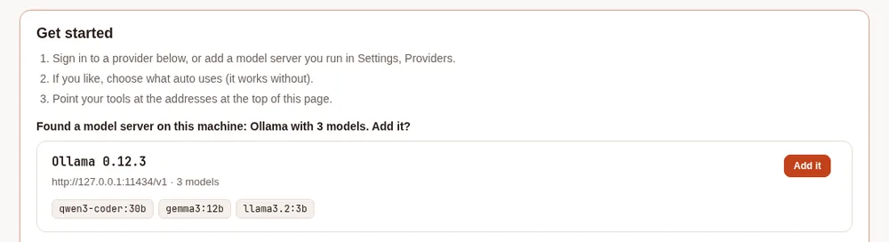
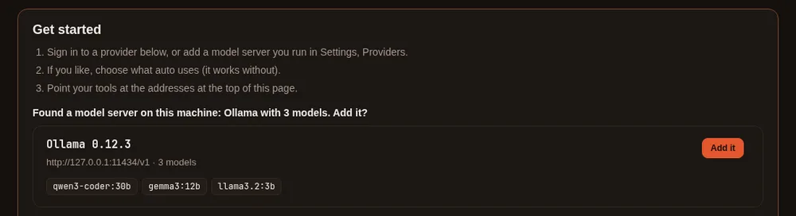

Connect a model server #
On this page
Any server that speaks the OpenAI API can be a provider: Ollama, LM Studio, oMLX, Lemonade, Unsloth Studio, vLLM, llama.cpp, an MLX server, or another. You can add one from the setup page or by editing the configuration file.
In plain words #
- What it is. A model server is a program on your computer or network that runs models itself: Ollama, LM Studio, oMLX, Lemonade, Unsloth, vLLM, llama.cpp and others.
- Why you want it. Your own models cost nothing per request, and your code never leaves your machine.
- The clicks. On the setup page, Providers, Find local models: every server running on this machine is listed with Add it. For one elsewhere, + Add provider, pick the type, Detect models, and save. It applies at once.
From the setup page #
- Open
http://127.0.0.1:11539, go to Providers and choose + Add provider. - Pick the type. The usual address for that server is filled in.
- Press Detect models to list what the server has loaded, then save.
It applies immediately. No restart is needed.
Find the servers already running #
If a model server is already running on this computer, the proxy can find it and add it for you.
- On the setup page: open Providers and press Find local models. Each server found is listed with its models. Press Add it to add one.
- On a first run: the Get started box shows any server that is running and not added yet. For example: "Found a model server on this machine: Ollama with 3 models. Add it?" If none is found, the box looks the same as before.
- In a terminal:
maple-proxy providers discoverlists what is running. Add--addto add each server that is not a provider yet, or--jsonfor a script. maple-harness doctoradds a line when a server is running but not added. When there is none, it says nothing about it.


It looks at these addresses:
| Server | Address | Added as type |
|---|---|---|
| Ollama | http://127.0.0.1:11434/v1 | ollama |
| LM Studio | http://127.0.0.1:1234/v1 | lmstudio |
llama.cpp's llama-server | http://127.0.0.1:8080/v1 | openai-compatible |
| oMLX | http://127.0.0.1:8000/v1 | omlx. A vLLM server on that port is shown as vLLM and added as openai-compatible |
| Lemonade Server | http://127.0.0.1:13305/api/v1 | lemonade |
| Unsloth Studio | http://127.0.0.1:8888/v1 | unsloth. It needs an API key, so Set it up opens the form for you to type it |
It also checks the same ports at ::1.
How it searches:
- Only this computer. It asks 127.0.0.1 and ::1, and never searches your network. To use a server on another machine, add it by hand (below).
- Only when you ask. It searches when you press the button, run the command or run
doctor, and once when the first-run Get started box opens. It never searches in the background. - A harmless request. It asks each server for its list of models, with no API key. It does not follow redirects, waits about a second and a half at most, and reads at most 1 MB.
- Nothing is added by itself. Add it (or
--add) writes one provider toconfig.yamland keeps your comments. The provider is markedoptional: trueand lists the server's models. It applies at once. - Your existing names stay yours. A model name that another provider, an alias or
autoalready answers to is left out, and you are told which. Adding a server never takes over requests meant for something else. - Add only a server you recognise. Whatever answers on those ports is listed, and what you send to a provider goes to it.
By hand #
Add a provider to ~/.config/maple-harness/config.yaml:
providers:
- id: ollama
type: ollama
base_url: http://127.0.0.1:11434/v1
optional: true
models:
- id: qwen3-coder
alias: local
supports_tools: true| Field | Meaning |
|---|---|
id | A name for this provider |
type | What kind of server it is (table below) |
base_url | The server's address including /v1 (Lemonade uses /api/v1) |
optional: true | If the server is not running, skip it instead of failing to start. Good for anything auto-detected |
models[].id | The model's name as the server knows it |
models[].alias | A short name you can use in /model and in other tools |
models[].supports_tools | Whether the model can call tools, which the agent needs |
models[].context_window | Usually leave this out: the proxy asks the server. Set it only if the server does not say |
api_key | For servers that need one (see below) |
Types and their usual addresses #
type | Server | Address |
|---|---|---|
ollama | Ollama | http://127.0.0.1:11434/v1 |
lmstudio | LM Studio | http://127.0.0.1:1234/v1 |
omlx | oMLX (Apple silicon) | http://127.0.0.1:8000/v1 |
lemonade | Lemonade Server (AMD) | http://127.0.0.1:13305/api/v1 |
unsloth | Unsloth Studio (expects an API key) | http://127.0.0.1:8888/v1 |
openrouter | OpenRouter (an API key; sign in to make one) | https://openrouter.ai/api/v1 |
xai | Grok, through xAI's API (an API key; sign in) | https://api.x.ai/v1 |
gemini | The Gemini API (a Google AI Studio key; read its free-tier notice) | https://generativelanguage.googleapis.com/v1beta/openai |
openai-compatible | Anything else that speaks the OpenAI API | you set it |
apple-foundation-models | Apple's on-device model (macOS 26, Apple silicon) | none |
GitHub Copilot and Anthropic are signed in, not addressed: see Sign in.
API keys #
If a server needs a key, do not paste it into the file. Refer to it:
providers:
- id: my-server
type: openai-compatible
base_url: https://models.example.com/v1
api_key: ${env:MY_SERVER_KEY} # read from an environment variable
# api_key: ${secret:my-server-key} # or from your system keyringA key you type on the setup page is stored in the keyring for you.
Use your models from other tools #
Any tool that speaks the OpenAI or Anthropic API can use the proxy. For what a tool gains from it (every model the proxy serves, fallbacks, budgets, the usage log and prompt caching) and what stays in Maple Harness, see What the proxy adds for other tools. Point it at the proxy's addresses:
| API | Address | Path |
|---|---|---|
| OpenAI-compatible | http://127.0.0.1:11535/v1 | give it with /v1 |
| Anthropic-compatible | http://127.0.0.1:11537 | give it without /v1: the tool adds it |
# anything OpenAI-compatible
OPENAI_BASE_URL=http://127.0.0.1:11535/v1Which model. Use a name the proxy lists: a model's id, or its alias. local is the alias from the example
above. See every name with curl http://127.0.0.1:11535/v1/models, or on the setup page. To give a tool a fixed name
for a model, add it under model_aliases: in the configuration; to let the proxy choose, see
Auto mode at the proxy.
API key. On this machine the proxy needs no key. Tools that insist on one get any placeholder, such as maple.
Tools on other machines need an access token in its place: see
Using it from another machine.
Claude Code #
Claude Code speaks the Anthropic API. Set these in your shell, or in the env block of ~/.claude/settings.json:
export ANTHROPIC_BASE_URL=http://127.0.0.1:11537
export ANTHROPIC_AUTH_TOKEN=maple # any value on this machine
export ANTHROPIC_MODEL=local # the model for the session
export ANTHROPIC_DEFAULT_HAIKU_MODEL=local # the model for its background tasks
claudeWithout ANTHROPIC_DEFAULT_HAIKU_MODEL, Claude Code asks the proxy for its own small model by name for background
work, which fails unless the proxy serves that name.
OpenCode #
Add a provider to ~/.config/opencode/opencode.json:
{
"$schema": "https://opencode.ai/config.json",
"provider": {
"maple": {
"npm": "@ai-sdk/openai-compatible",
"name": "Maple",
"options": { "baseURL": "http://127.0.0.1:11535/v1" },
"models": {
"local": { "name": "local" }
}
}
},
"model": "maple/local"
}Each key under models is a name the proxy lists. Pick one with /models, or opencode run -m maple/local "...".
pi #
Add a provider to ~/.pi/agent/models.json:
{
"providers": {
"maple": {
"baseUrl": "http://127.0.0.1:11535/v1",
"api": "openai-completions",
"apiKey": "maple",
"models": [
{ "id": "local" }
]
}
}
}pi needs the apiKey to show the models; any value works on this machine. Pick a model with /model, or
pi --model maple/local.
GitHub Copilot CLI #
Copilot CLI's bring-your-own-model mode is set with environment variables, and needs no GitHub sign-in:
export COPILOT_PROVIDER_BASE_URL=http://127.0.0.1:11535/v1
export COPILOT_MODEL=local
copilotLeave COPILOT_PROVIDER_TYPE and COPILOT_PROVIDER_WIRE_API at their defaults (openai and completions). For a
proxy on another machine, put the access token in COPILOT_PROVIDER_API_KEY.
Hermes #
Hermes Agent (Nous Research) reads its model from ~/.hermes/config.yaml (or $HERMES_HOME/config.yaml). Point a
custom endpoint at the proxy:
model:
provider: custom
base_url: http://127.0.0.1:11535/v1
api_key: maple # any value on this machine
default: localhermes model (choose Custom endpoint) writes the same settings for you. Hermes needs a model with at least
64,000 tokens of context. For a proxy on another machine, put the access token in api_key.
Check it #
curl http://127.0.0.1:11535/v1/models # your models
maple-harness doctor # checks the install and each providerIf Detect models finds nothing, the server is usually not running or the address is missing its /v1.
If Find local models finds nothing:
- The server is not running, or it is still loading a model and does not answer within about a second and a half. Try again.
- It listens on a port other than its usual one, or only on a network address. Add it by hand with its address.
- It runs in a container whose port is not published on 127.0.0.1. Publish it, or add it by hand.
See Troubleshooting.